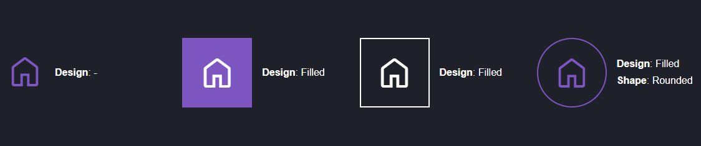

Komponenten¶
Die derzeitigen Einstellungen der Komponenten im ThemeManager definieren momentan das Erscheinungsbild von Inhaltselementen, Modulen, Tabellen und der visuellen Trennung zwischen zwei Artikeln.
Box¶
Im eigentlichen Sinne auch als Card oder Kachel bekannt, existiert die box Eigenschaft für die verfügbaren Gruppen
'Components' und 'Elements' im StyleManager.
Erklärungen zu StyleManager Gruppen
Mehr zu den StyleManager-Gruppen Global, Components und Elements kann
hier nachgelasen werden.
Wird im StyleManager-Reiter Layout eine der Optionen unter Box aktiviert, werden der Hintergrund und der Rahmen der
Komponente bzw. der sich darin befindlichen Elemente gemäß den hier konfigurierten CSS-Einstellungen geändert.
Exkurs: Padding von Components und Elements¶
Wenn die Option box aktiviert ist, greifen automatisch $top-bottom-padding-small und $left-right-padding-small,
die in Abstände (Innen) eingestellt werden können.
Innerhalb von Components und Elements kann das Padding für jeden Breakpoint einzeln
konfiguriert werden.
Die Option Reset hebt den Innenabstand auf. Diese Option empfiehlt sich jedoch nur für Bilder. Bild-Text-Elemente
haben eine zusätzliche Einstellung, um das Bild an den Rahmen zu binden, sodass der Text mit dem Padding versehen wird.
Info
Abweichend der Einstellungen Top, Bottom, Left und Right des
äußeren Abstands (Margin), existiert für das Padding nur eine Option.
Hintergrundfarbe¶
$boxed-background-color
Diese Einstellung beeinflusst die Hintergrundfarbe (background-color) der Kachel für folgende StyleManager-Gruppen:
Components
Elements
Der Standardwert ist hier die Hintergrundfarbe des <body> sofern nicht anders konfiguriert.
Weitere Hintergrundfarben in Components und Elements
Die hier gesetzte Hintergrundfarbe kann jederzeit durch eine Hintergrundfarbe innerhalb der Components und
Elements-Gruppen überschrieben werden. Details dazu können im Kapitel
Hintergründe nachgelesen werden.
Wenn eine dunkle Hintergrundfarbe ausgewählt wird, können die Textfarben der Listen-Items über
Components > Text > Text-Color und die der Überschrift über Global > Headlines > Text-Color (oder im Artikel)
angepasst werden.
Verfügbare (S)CSS-Variablen
Rahmen¶
$boxed-border-color $boxed-border-radius $boxed-border-width $boxed-border-style
Bekannt als border, stehen uns hierbei die folgenden Einstellungen zur Verfügung, sodass der Rahmen der Kachel
beeinflusst werden kann.
Rahmenfarbe Rahmenradius Rahmenbreite Rahmenstil
Verfügbare (S)CSS-Variablen
Die Option box-shadow¶
Bei Einstellung der Option box-shadow wird ein zusätzlicher Schatten/Schlagschatten ergänzt, der in den
sonstigen Einstellungen konfiguriert werden kann.
Wenn für alle Box-Komponenten nur der Schlagschatten ohne Rahmen erwünscht ist, kann der $boxed-border-width auf 0
gestellt werden. Soll der Rahmen bei box weiterhin bestehen bleiben, kann eine Option über einen eigenen
Skin individuell erweitert werden.
Linien (Divider)¶
$divider-size $divider-style $divider-color
Linien sind Rahmen, die in Artikeln verwendet werden, um diese optisch vom vorherigen oder nachfolgenden Artikel zu trennen.
In den StyleManager-Optionen von Artikeln stehen sowohl für den oberen (Top) als auch für den unteren (Bottom) Rahmen
folgende Optionen unter Component > Divider zur Verfügung:
| Option | Beschreibung |
|---|---|
| Full | Durch Setzen der Option Full wird zwischen den Artikeln eine Linie mit voller Breite gesetzt, sodass die gesamte Bildschirmbreite verwendet wird. |
| Inner | Die Option Inner folgt dem inneren Abstand von Artikeln, sodass sie sich anhand der Breite der Inhaltselemente orientiert. |
Folgende Einstellungen können hierbei vorgenommen werden:
$divider-size: Höhe der Linie$divider-style: Stil der Linie$divider-color: Farbe der Linie
Verfügbare SCSS-Variablen und Klassen
Tabelle¶
Über die nachfolgenden Einstellungen kann das Aussehen von Tabellen <table> auf der Website angepasst werden.
Warning
Alle hier eingestellten Tabellenstyles beeinflussen das Element <table>, sodass auch jene Tabellen gestyled
werden, welche im TinyMCE-Editor erstellt wurden.
Es ist derzeit nicht möglich, dass Tabellenstyles über den StyleManager aktiviert oder *deaktiviert werden können. Ist dies nicht erwünscht, können Tabellen im eigenen Skin angepasst werden.
Tabellenzelle¶
$table-cell-spacing $table-cell-padding $table-cell-border-radius
Der Abstand zwischen Zellen kann über die Variable $table-cell-spacing eingestellt werden, der innere Abstand
über $table-cell-padding.
Wird zusätzlich eine Zellen-Hintergrundfarbe gesetzt, wird der Rahmenradius ($table-cell-border-radius) sichtbar.
Rahmen¶
Tabelle (Außen)
$table-border-color $table-border-style $table-border-width
Beeinflusst die Rahmenfarbe, den Rahmenstil sowie die Rahmenbreite einer Tabelle (<table>).
Tabellenkopf
$table-head-border-color $table-head-border-style $table-head-border-width
Beeinflusst die Rahmenfarbe, den Rahmenstil sowie die Rahmenbreite eines Tabellenkopfs (<th>).
Tabellenzelle
$table-cell-border-color $table-cell-border-style $table-cell-border-width
Beeinflusst die Rahmenfarbe, den Rahmenstil sowie die Rahmenbreite einer Tabellenzelle (<td>).
Tabellenbeschreibung¶
$table-caption-*
Oft unter der Tabelle positioniert, kann
die Tabellenbeschreibung genutzt werden, um den
Inhalt einer Tabelle zusammenzufassen. Diese kann über $table-caption-side unter oder über der Tabelle angezeigt
werden, über das $table-caption-alignment kann der Text ausgerichtet werden.
Weitere Einstellungen wie Innenabstand, Farbe, Hintergrund und Schriftgröße sind möglich.
Textausrichtung¶
$table-text-align
Standardmäßig steht die Text-Ausrichtung einer Tabelle auf inherit, sodass diese durch die Einstellungen eines
Artikels oder Inhaltselements kontrolliert werden können. Über $table-text-align kann die Text-Ausrichtung für alle
Tabellen global kontrolliert werden.
Schriftstärken¶
$table-head-font-weight $table-body-font-weight $table-foot-font-weight
Über diese Einstellungen kann die Schriftstärke von Tabellenkopf, normalen Zellen und dem Tabellenfuß eingestellt werden. Mehr Informationen zu Schriftstärken kann dem Kapitel Schriften entnommen werden.
Farben¶
$table-head-* $table-foot-* $table-body-*
Über diese Variablen lassen sich die Textfarbe (-color), sowie die Hintergrundfarbe (-background) der nachfolgenden
Bestandteile einer Tabelle einstellen:
- Tabellenkopf (
$table-head-*) - Tabellenfuß (
$table-foot-*) - Gerade Zellen (
$table-body-even-*) - Ungerade Zellen (
$table-body-odd-*)
Icon¶
Bis auf die Icon-Schriftart bezieht sich die nachfolgende Konfiguration auf das Aussehen der durch den ThemeManager
bereitgestellten Inhaltselemente Icon, Icon-Text und Icon-Text-Liste.

Icon-Schriftart¶
$icon-font-family
Diese Einstellung überschreibt die Schriftart der Icons, die vom ThemeManager verwendet werden.
Ändern der $icon-font-family
Wird die Einstellung "ctm-icon" abgeändert, funktioniert die unter Icons beschriebene
Generierung und Bereitstellung von Icons nicht mehr.
Das Ändern der hier eingestellten Schriftart wird nur empfohlen, wenn das Feature nicht benötigt wird und die verwendeten Icons über einen eigenen Skin festgelegt werden.
Größe der Icons¶
$icon-size-tiny $icon-size-small $icon-size-medium $icon-size-large $icon-size-large
Die Icon-Größe bestimmt die Schriftgröße des ausgewählten Icons und kann im StyleManager für Icon-Elemente eingestellt
werden. Unter der Einstellung Size finden sich die Optionen tiny, small, medium und large. Der Standard-Wert
bei keiner Einstellung ist medium.
Innerer Abstand¶
$icon-shape-spacing
Die Gestaltung des Inneren eines Icons wird durch $icon-shape-spacing innerhalb der Icon-Einstellungen beeinflusst.
Sowohl bei Filled als auch bei Outline wird ein innerer Abstand gesetzt, der durch $icon-shape-spacing definiert
wird.
Icon Designs¶
$icon-outlined-width
Über die Optionen Design sowie Shape kann das Aussehen von Icons modifiziert werden.

Die Auswahl des Designs Outline in den zuvor beschriebenen Einstellungen bewirkt das Hinzufügen eines Rahmens um das
Icon. Die Breite des Rahmens kann über $icon-outlined-width eingestellt werden.
{kind=link}
Exkurs: Layout Mode für Icon- und Bild-Text¶
Sowohl in Icon- als auch Bild-Text-fähigen Elementen und Modulen kann unter Components > Layout der Mode
eingestellt werden, durch welches sich das Layout ändert.
Icon-Text
| Mode | Beschreibung |
|---|---|
| - | Das Icon wird über dem Text angezeigt. |
| Top | Das Icon wird über dem Text angezeigt und bekommt einen Abstand. |
| Left (Flex) | Das Icon wird über CSS-Flexbox links vom Text angezeigt. |
| Right (Flex) | Das Icon wird über CSS-Flexbox rechts vom Text angezeigt. |
| Left (Float) | Das Icon floatet links vom Text. Ist der Text länger als die Größe des Bildes, umschließt dieser das Icon. |
| Right (Float) | Das Icon floatet rechts vom Text. Ist der Text länger als die Größe des Bildes, umschließt dieser das Icon. |
Tip
Ist ein Modus eingestellt, kann das Element -> Spacing genutzt werden, um den Abstand von Icon zu Text einzustellen.
Bild-Text
| Mode | Beschreibung |
|---|---|
| - | Das Bild wird über dem Text angezeigt. |
| Flex | Aktiviert CSS-Flexbox und ermöglicht die Positionierung des Bildes auf vertikaler (Vertical Alignment) und horizontaler Achse (Horizontal Alignment). |
| Float | Floatet das Bild und ermöglicht die Positionierung des Bildes auf vertikaler (Vertical Alignment) Achse. |
| Text-within | Positioniert den Text absolut über dem Bild und sollte nur mit passenden Bildgrößen und wenig Text verwendet werden. |
| Text-within (Hover) | Hat den selben Effekt wie Text-within, der Text wird jedoch ausgeblendet und ist nur bei Hover oder Klick sichtbar. |
Für Bild-Text werden weitere Einstellungen bereitgestellt, sodass Cards konfiguriert werden können:
Horizontal Alignment
Positioniert das Bild Links oder Rechts und kann je nach Modus mit Vertical Alignment verwendet werden.
Vertical Alignment
Positioniert das Bild Oben oder Unten und funktioniert nicht im Float-Modus.
Width
Über diese Option kann die Breite des Bildes eingestellt werden. Weitere Optionen können über die $image-text-ratio-options ergänzt werden.
Dynamische Variable
Hierbei handelt es sich um eine dynamische Variable, welche weitere Optionen ergänzen kann.
Dynamische Einstellungen stehen erst nach Speichern & Kompilieren zur Verfügung, da die neuen Optionen sowohl in
den Style-Sheet-Dateien als auch in den dynamischen Style-Manager-Optionen (templates/style-manager-tm.xml)
hinterlegt werden.
Image outset
Wenn Box, der Flex-Modus und Vertical Alignment konfiguriert sind, kann das Bild durch Aktivieren dieser Option
auf die gesamte Breite der Kachel gestreckt werden.
Image stretch
Wenn Box, der Flex-Modus und Horizontal Alignment konfiguriert sind, kann das Bild durch Aktivieren dieser Option
auf die gesamte Höhe der Kachel gestreckt werden.
Mehr Informationen zum Verhalten von Bild und Text im Box-Modus können im
Exkurs: Padding von Components und Elements nachgelesen werden.
Text-Modus und Mobile Ansicht von Bild-Text
Text-Modus
Wird einer der Text-within-Modi eingestellt, beeinflussen die Optionen Vertical Alignment,
Horizontal Alignment, Width und Element -> Spacing das Verhalten des Textes.
Layout-Aktivierung ab bestimmter Bildschirmbreite
Wird ein Bild links oder rechts vom Text positioniert, greift diese Einstellung erst ab der eingestellten Bildschirmbreite unter $image-text-behaviour-min-width.
Medien¶
Video¶
$video-bg
Dient der Einstellung der Hintergrundfarbe von selbst gehosteten Videos, welche über das Element Video eingebunden werden. Für Videos können nicht nur Höhe und Breite eingegeben werden, es kann auch ein Video-Poster (Vorschaubild) ausgewählt werden, welches jedoch keine Bildgröße erhält.
Es wird empfohlen, dass das genutzte Vorschaubild dasselbe Seitenverhältnis wie das des Videos hat. Sollte dies nicht
ausreichen, kann im StyleManager unter Element > Image das
Seitenverhältnis angepasst werden. Dieses beeinflusst den Container
des Videos, sodass das Video seine Originalgröße behält.